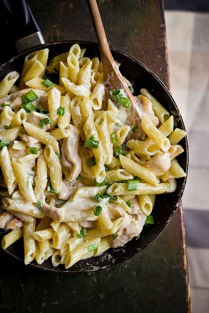

Koorene kanapasta

Koostisosad ja kogused
Koostisosa
Kogus
Penne pasta
400g
Küüslauguküün
2tk
Rannamõisa jahutatud broilerifilee
300g
Värske till
Vastavalt soovile
Rõõskkoor (35%)
4dl
Riivitud juust
100g
Roheline sibul, hakitud
4sl
Sool, pipar
Vastavalt soovile
Valmistamine
Keeda pasta soolaga maitsestatud vees al dente(poolpehmeks).
Samal ajal prae pannil õlis peeneks hakitud küüslauguküüned klaasjaks, tõsta kõrvale.
Viiluta broilerifileed õhukesteks viiludeks ning prae samal pannil mõlemalt poolt valmis, maitsesta soola ja pipraga.
Lisa juurde küpsetatud küüslaugutükid, hakitud till.
Vala juurde rõõsk koor ning lase madalal kuumusel hetke podiseda.
Samal ajal nõruta pasta ning lisa segades pannile.
Lisa ka juust ja roheline sibul ning sega kõik läbi.
Võid pastarooga sisse segada ka rohkelt basiilikulehti!
Serveeri!
Retsepti allikas